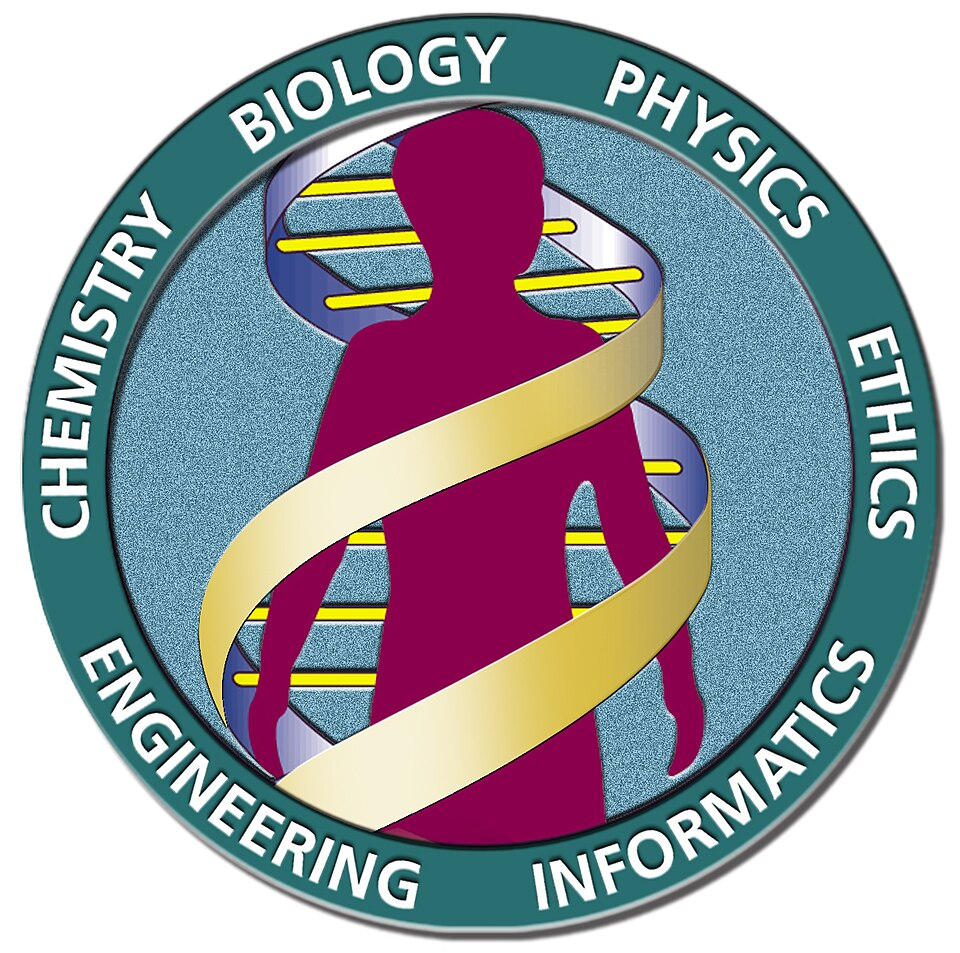

Leído el libro de la vida: presentan el primer borrador del genoma humano
Clinton y Blair anunciaron, junto a los científicos rivales Francis Collins y Craig Venter, el primer mapa casi completo de los tres mil millones de letras que componen la herencia de la especie. «Hoy aprendemos el idioma con el que Dios creó la vida», dijo el presidente.

En la Casa Blanca, con el primer ministro británico Tony Blair conectado por pantalla desde Londres, el presidente Bill Clinton anunció hoy que la humanidad ha terminado de trazar el primer borrador de su propio genoma: la lista casi completa de los tres mil millones de letras químicas que, ordenadas en una secuencia precisa, contienen las instrucciones para construir y hacer funcionar a un ser humano. «Hoy aprendemos el idioma con el que Dios creó la vida», dijo Clinton, y comparó el logro con el mapa que Lewis y Clark trazaron del continente. A su lado, sonrientes y por fin juntos, estaban los dos hombres que hasta anteayer competían con ferocidad por llegar primero.
Conviene explicar qué se ha leído. Dentro de casi cada célula del cuerpo, enrollada en una molécula con forma de escalera de caracol, está escrita con solo cuatro letras químicas la receta entera del organismo: es el genoma, el manual de instrucciones de la especie. Leerlo significa averiguar el orden exacto en que se suceden esos tres mil millones de letras, tarea comparable a copiar sin errores una enciclopedia de miles de tomos escrita sin espacios ni puntuación. El borrador presentado hoy no está completo ni libre de huecos, y falta lo más arduo: entender qué dice, porque conocer las letras no es lo mismo que comprender el texto.
El camino hasta aquí fue una carrera encarnizada, y ésa es la razón de que el anuncio de hoy tenga aire de tregua diplomática. Por un lado, un consorcio público internacional, dirigido por Francis Collins, con laboratorios en varios países y dinero de los Estados y de la caridad, que trabajaba a la vista de todos y publicaba cada tramo apenas lo tenía. Por el otro, una empresa privada fundada por el biólogo Craig Venter, que prometió leer el genoma más rápido y más barato con un método audaz, y que aspiraba a patentar hallazgos. La rivalidad se volvió tan áspera y tan pública que los gobiernos intervinieron para forzar un empate: ambos anuncian hoy, a la vez, y comparten la gloria.
No falta quien mire este día como un eslabón de una cadena que viene de lejos. Hace casi medio siglo, este diario contó que dos jóvenes de Cambridge habían descubierto la forma en doble hélice de la molécula de la herencia, y aventuró entonces, con prudencia, que nadie podía medir las consecuencias de aprender algún día a leer esa escritura. Ese día empezó a llegar hoy. Entre bambalinas, la jornada tuvo su cocina: fueron necesarias semanas de negociaciones y hasta la mediación de la Casa Blanca para que los dos rivales aceptaran subir juntos al estrado, y cuentan que ni el orden de los discursos se dejó librado al azar, para que ninguno pareciera segundo.
La prudencia obliga a rebajar los humos triunfales. Tener el texto no es entenderlo, y menos aún corregirlo: pasarán años antes de que este diccionario recién copiado sirva para curar siquiera una enfermedad. Y asoman ya las preguntas espinosas: ¿de quién es esta información?, ¿podrá una empresa adueñarse de un pedazo del manual de la especie?, ¿leerá algún patrón, o alguna compañía de seguros, el genoma de un hombre antes de darle trabajo o cobertura? El libro de la vida está, por primera vez, abierto sobre la mesa. Aprender a leerlo tomó un siglo; aprender a usarlo sin que se vuelva contra nosotros será, se anima a pronosticar este diario, la gran tarea del siglo que empieza.